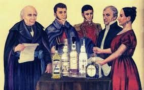
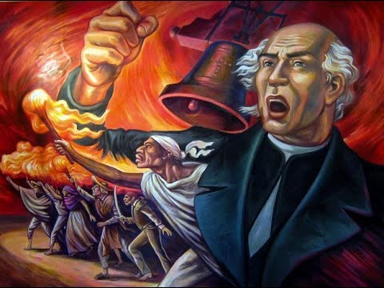

LA CONSPIRACION DE QUERETAROLa Conspiración de Querétaro no surgió de la noche a la mañana, sino que fue la evolución natural de círculos de discusión intelectual que existían en la ciudad desde años atrás. Tras la invasión napoleónica de 1808 y la crisis de legitimidad del poder virreinal, un grupo de notables locales comenzó a reunirse formalmente a principios de 1810. Para evitar sospechas, estas reuniones se disfrazaron como una sociedad literaria y cultural llamada "La Güira", donde se discutían temas de arte y ciencia, pero en privado se analizaba la situación política. Los fundadores iniciales fueron figuras locales como el licenciado Juan Nepomuceno Alcocer, el abogado Ignacio Pérez y el propio corregidor Miguel Domínguez. Sin embargo, el grupo adquirió una dimensión verdaderamente revolucionaria cuando se incorporaron militares con experiencia, como Ignacio Allende y Juan Aldama, quienes trajeron consigo la visión estratégica necesaria para transformar la queja política en un plan de acción concreto. |
 |
|
|---|---|---|
La incorporación de Miguel Hidalgo y Costilla, párroco de Dolores, fue un punto de inflexión decisivo para el crecimiento y la profundización de estos planes. Hidalgo no era un desconocido; era una figura respetada, con formación universitaria y contactos en la élite intelectual, pero con una profunda empatía por las clases populares. Su adhesión al grupo no solo aportó prestigio, sino que amplió la base de apoyo potencial más allá de la ciudad de Querétaro. En las reuniones, el discurso evolucionó significativamente: si bien al principio se hablaba de formar juntas de gobierno que actuaran en nombre del rey Fernando VII, una postura legalista para justificar la autonomía, poco a poco las conversaciones se volvieron más radicales. Comenzaron a debatirse ideas sobre la soberanía popular, la igualdad ante la ley y, de forma más velada, la posibilidad de una ruptura total con España, añadiendo una dimensión social que otras conspiraciones anteriores no habían tenido.Con las ideas claras y los líderes definidos, la preparación para el levantamiento se convirtió en un proceso complejo y organizado que involucró a decenas de personas. Bajo la supervisión de Ignacio Allende, que conocía la táctica militar, se establecieron cadenas de comunicación cifradas y redes de apoyo en ciudades estratégicas como San Miguel el Grande, Celaya, Guanajuato y Valladolid. El aspecto logístico fue fundamental: los hermanos Epigmenio y Emeterio González, comerciantes acomodados, convirtieron sus hogares y almacenes en centros de acopio. Se estima que se fabricaron más de 30,000 lanzas y picas, para lo cual se compraron grandes cantidades de hierro y madera, justificadas públicamente como materiales para obras de construcción y labranza. También se acumularon armas de fuego, pólvora y balas, y se redactaron documentos preliminares para el nuevo gobierno, definiendo rangos y planes financieros para sostener la rebelión.
Originalmente, la fecha del levantamiento se fijó para el 2 de diciembre de 1810, coincidiendo con las festividades de la Virgen de la Soledad y el inicio de las celebraciones navideñas. Se eligió este momento porque la afluencia de peregrinos y el movimiento de gente permitirían concentrar fuerzas sin levantar sospechas excesivas. Sin embargo, a medida que avanzaban los preparativos, el grupo creció demasiado rápido y el riesgo de ser descubiertos aumentó considerablemente, por lo que se tomó la decisión de adelantar la acción para principios de octubre. El plan operativo detallado establecía que el estallido inicial ocurriría en San Juan de los Lagos, Jalisco, un punto geográfico estratégico desde el cual las fuerzas se dividirían para tomar control de las ciudades circundantes, cortar las comunicaciones con la Ciudad de México y establecer una base de operaciones antes de que el gobierno virreinal pudiera reaccionar. A pesar de la secrecía mantenida hasta entonces, el movimiento comenzó a sufrir filtraciones meses antes del desenlace planeado. La naturaleza misma de la preparación compras masivas de materiales, viajes constantes de sus miembros y reuniones nocturnas frecuentes comenzó a llamar la atención de las autoridades y de los vecinos simpatizantes de la corona. Ya desde agosto de 1810, llegaron a oídos del alcalde de Querétaro las primeras denuncias anónimas sobre la existencia de un complot, pero estas fueron desestimadas por considerarlas calumnias o exageraciones, en parte debido al prestigio social de los involucrados. Sin embargo, la falta de discreción de algunos miembros facilitó las cosas a los informantes, siendo el capitán Joaquín Arias, descontento por no recibir el rango que exigía, quien comenzó a hablar abiertamente en lugares públicos sobre los planes de rebelión.
La situación estalló definitivamente entre el 13 y el 15 de septiembre, cuando las denuncias de Arias y de otros delatores como el escribano Mariano Galván y el cura de San Francisco obligaron a las autoridades eclesiásticas y militares a actuar. Se ordenó un cateo urgente y sorpresivo, y en la noche del 13 de septiembre, una partida de soldados irrumpió en la casa de los hermanos González. Lo que encontraron confirmó las peores sospechas: grandes cantidades de armas, pólvora y el material bélico acumulado durante meses. Inmediatamente, se declaró el estado de alerta en la ciudad, se cerraron las entradas y salidas, y el corregidor Miguel Domínguez fue puesto bajo vigilancia en su propia residencia, con el objetivo de desarticular la conspiración antes de que pudiera dar el primer golpe y obligar a los involucrados a delatarse mutuamente. En medio de este caos, Josefa Ortiz de Domínguez demostró una valentía y determinación excepcionales al convertirse en el eslabón vital que salvó al movimiento de ser aniquilado antes de empezar. Confinada en una habitación de su casa y consciente de que su esposo estaba bajo presión y que la red estaba a punto de colapsar, su prioridad fue salvar a los líderes que estaban fuera de la ciudad, especialmente a Allende y Hidalgo, quienes desconocían que el plan había sido descubierto. A pesar de estar embarazada y rodeada de guardias, logró encontrar un momento de descuido para contactar con Ignacio Pérez, un alcaide de confianza, a quien entregó un mensaje urgente con la instrucción perentoria de cabalgar sin descanso hacia San Miguel el Grande. La misión de Pérez fue exitosa y su llegada oportuna permitió que la noticia llegara a los líderes insurgentes justo a tiempo para evitar su captura inmediata.
Al recibir la noticia en la madrugada del 15 de septiembre, Ignacio Allende se dirigió inmediatamente a Dolores para informar a Miguel Hidalgo, y ambos se reunieron para tomar una decisión que cambiaría la historia. Evaluaron que si huían o esperaban, serían capturados y ejecutados; si actuaban de inmediato, aunque perdieran la ventaja de la sorpresa y la organización planificada, aún tenían la posibilidad de convocar al pueblo y comenzar la lucha. Hidalgo, confiando en su influencia sobre la población local, tomó la decisión histórica de adelantar el levantamiento para esa misma noche. En la madrugada del 16 de septiembre, tocó las campanas de la iglesia para convocar a sus feligreses y pronunció el famoso "Grito", llamando a levantarse en armas. Con este acto, la Conspiración de Querétaro, que había sido desarticulada como organización secreta, se transformaba en una guerra abierta de independencia que, tras once años de conflicto, culminaría con la libertad de México.
|
 |
Al recibir la noticia en la madrugada del 15 de septiembre, Ignacio Allende se dirigió inmediatamente a Dolores para informar a Miguel Hidalgo, y ambos se reunieron para tomar una decisión que cambiaría la historia. Evaluaron que si huían o esperaban, serían capturados y ejecutados; si actuaban de inmediato, aunque perdieran la ventaja de la sorpresa y la organización planificada, aún tenían la posibilidad de convocar al pueblo y comenzar la lucha. Hidalgo, confiando en su influencia sobre la población local, tomó la decisión histórica de adelantar el levantamiento para esa misma noche. En la madrugada del 16 de septiembre, tocó las campanas de la iglesia para convocar a sus feligreses y pronunció el famoso "Grito", llamando a levantarse en armas. Con este acto, la Conspiración de Querétaro, que había sido desarticulada como organización secreta, se transformaba en una guerra abierta de independencia que, tras once años de conflicto, culminaría con la libertad de México. |
|---|